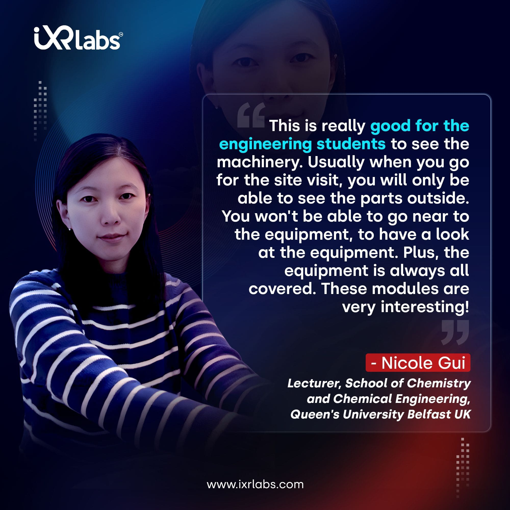

Technology is changing the way we teach. One of the most promising tools for higher education is the virtual laboratory. No longer confined to physical lab setups, students today can explore complex experiments through their screens—or even VR headsets.
For educators, this shift offers a chance to deliver practical learning safely, flexibly, and affordably.
Let’s walk through a practical roadmap to help university faculty and stakeholders implement virtual labs effectively.
Why Virtual Laboratories Matter

Traditional labs are expensive. Equipment gets outdated. Space is limited. Virtual labs solve many of these issues. They make learning more accessible and offer students repeatable, hands-on experiences from anywhere.
Whether it’s virtual reality for engineering or VR in medical education, immersive learning is proving to be more than just a backup plan.
In fact:
Stanford University reports a 30% increase in knowledge retention with VR training.
PwC found that learners trained in VR were 4x faster than those in a classroom.
Step 1: Identify Curriculum Needs
Start with what you teach, not the technology. Review your curriculum and ask:
● Where do students struggle the most?
● Which experiments are hard to conduct in real labs?
● Are there any safety or ethical limitations?
Virtual laboratories in science education can address many gaps, especially in subjects like:
● Biology: cellular simulations, anatomy dissections
● Chemistry: chemical reactions, titrations
● Engineering: stress tests, circuit design
● Medical: surgery simulations, diagnostic tools
Create a list of practical's where virtual labs can bring clarity.
Step 2: Choose the Right Technology
Not all virtual labs are built the same. You’ll need to choose based on:
● Discipline focus: Science, engineering, or medical.
● Access type: Web-based, app-based, or VR headset compatible.
● Features: Real-time feedback, assessments, interaction modes.
When evaluating tools for virtual reality in STEM education, check if they:
● Support curriculum alignment
● Offer analytics or LMS integration
● Work across devices
Some leading platforms in the US market:
| Platform | Best For | Device Support |
|---|---|---|
| Labster | Science & biology | Desktop, VR |
| zSpace | Engineering, Physics | Mixed Reality |
| Higher Ed STEM, Medical VR | VR headsets, browser |
Step 3: Involve Faculty and Train Them
Technology alone isn’t enough. Faculty adoption is key. Organize:
● Live demos
● Training workshops
● Feedback sessions
Start small. Have early adopters pilot the virtual labs and share results with peers. When professors see real classroom value, adoption grows naturally.
Step 4: Integrate with LMS
Seamless access increases student usage. Most virtual labs now integrate with:
● Moodle
● Canvas
● Blackboard
● Google Classroom
This ensures:
● Single sign-on for students
● Grades sync with existing systems
● Easy scheduling and tracking
Talk to your IT team early on. Integration efforts shouldn’t become a roadblock later.
Step 5: Run a Pilot Program
Before scaling, run a controlled pilot.
Choose:
● One course
● One department
● One semester
Set measurable goals:
● Student satisfaction scores
● Lab completion rates
● Assessment improvement
Gather feedback from students and instructors. Make iterative changes.
Step 6: Measure Learning Outcomes
 Get the App from Meta Store: Download Now
Get the App from Meta Store: Download Now
Virtual labs should not just “wow” learners—they must teach effectively.
Measure impact through:
● Pre- and post-assessment comparisons
● Faculty feedback
● Student engagement data
Use data dashboards if your platform provides them. These insights can help justify budgets and scale adoption.
Step 7: Scale and Support
Once you’ve proved the value, plan for a full rollout.
● Expand to other departments
● Add support staff or student mentors
● Build a knowledge base or FAQ section
Consider forming a Virtual Labs Committee within your university to oversee standards, content selection, and updates.
Real-Life Benefits for Educators
Virtual labs offer more than convenience.
● Repetition without resource strain: Students can repeat experiments as needed.
● Access for all learners: Ideal for remote or hybrid setups.
● Safer environment: Especially critical in VR science experiments like dissection or chemical reactions.
The Future of Science Labs
The shift isn’t a trend—it’s a transformation.
● 70% of universities in the US plan to expand their digital infrastructure in 2025 (EDUCAUSE report).
● Global investment in virtual labs for education is projected to hit $9.8 billion by 2030 (MarketsandMarkets).
This isn’t about replacing physical labs. It’s about expanding what’s possible. Explore all Science VR Simulations:
Key Considerations for University Leaders
Here’s what deans and department heads should keep in mind:
● Content relevance: Choose labs aligned with your university’s pedagogy.
● Budgeting: Factor in licenses, VR headsets (if needed), and training.
● Equity: Ensure all students have access, especially those off-campus.
Tips to Get Started Faster
● Start with general science modules.
● Collaborate with tech-savvy faculty.
● Use grant opportunities like NSF’s Advanced Technological Education (ATE).
Final Thoughts
Implementing virtual laboratories isn’t just a tech decision—it’s a teaching strategy. When done right, it adds value to students, faculty, and institutional goals. As educators, you’re shaping the next generation of thinkers. Tools like virtual reality labs make that journey clearer, more immersive, and more inclusive.